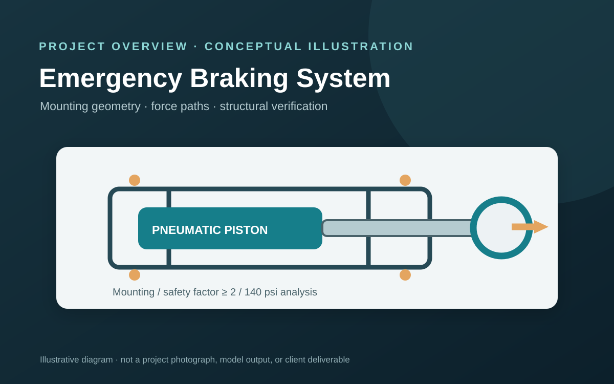

Emergency Braking System | UTFR
Mount pneumatic emergency braking pistons safely within packaging constraints while validating structural performance under braking loads and pressure.
01 / Problem statement
Mount pneumatic emergency braking pistons safely within packaging constraints while validating structural performance under braking loads and pressure.
02 / My contribution
Designed mounting options with 10 mm clearance between piston and housing. Analyzed mounting-tab and bolt shear stresses and evaluated yielding and fatigue of the custom chamber.
03 / Engineering methods and tools
ANSYS Mechanical, finite element analysis, shear stress, yield analysis, fatigue analysis, mechanical mounting design
04 / Results and outcomes
Targeted a safety factor of at least 2. Analyses considered 140 psi chamber pressure; project estimates indicated up to 25% more fatigue life and $90 less manufacturing cost per redesigned part. A 20% lower failure-risk estimate was also reported.
Project illustration

Original photographs or approved diagrams can be substituted when available.